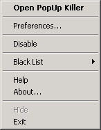

| Menu Options Overview |
Click over a menu item to jump to its description
Click on a menu item to view its description below. To access this menus, right click over the icon in the tray area or click the Preference tab in PUK's main window.
Open PopUp Killer
Use this option to view PUK's main window when it is hidden and you can only see the icon in the tray area. You may also double click PUK's icon to bring the window visible.Preferences
This option opens the Preferences dialog, from which you can tweak some of the PUK's features.General tab
Auto Start
Enable this option to automatically start PopUp Killer whenever Windows starts.Jump to Home Page
Enable this option to make PUK open a new browser window and jump to your home page in case PUK closes all the opened windows.Disable Shortcut Keys
If this option is checked, PopUp Killer's state cannot be changed using the CTRL and CTRL+SHIFT keys. If this option is not checked, the you can temporarily disable PopUp Killer by holding the CTRL key or you can permanently disable it by pressing and holding the CTRL+SHIFT keys for about 3 seconds. Pressing these keys again will re-enable PopUp Killer.Look & Feel
Flash Tray Icon
When enabled, PUK will change the color of the yellow lighting icon every time a popup is closed.
This option may become useful when turning the sound effects off.Show Tray Icon
You can preserve some space in your tray area by disabling this option. When this option is disabled, PopUp Killer will not show you an icon in the tray, so the only way to access the options menus and PUK's main window is by running PUK again.
Even when you won't see PUK's icon doesn't mean that it will be inactive.Show Tabs Text
If this option is checked the tabs on the main window will display a small description. Uncheck this option to save space on PUK's main window.Scramble PopUps Text
Because the name of some popups may contain offensive words, you can check this option and PUK will scramble the text of the popups to make them impossible to read.Enable Sounds Effects
If this option is enabled, you will hear a sound every time PUK closes a PopUp. This is useful when you have the Smart! option enabled, because it will be the only way for you to know that PopUp Killer is working...
To configure the sound PUK uses, open the Sounds application in the Control Panel, look for the PopUp Annihilation under the PopUp Killer entry. Configure the associated wav file as you would with any other entry.
Use the About option from the pulldown menu to hear the sound PUK will use to notify you every time it kills a PopUp.
(See Flash Icon)Detection Tab
Smart!
This options enables the AI component in PUK's PopUps detection code which will make PopUp Killer detect and close PopUps so fast you won't even see them appear!
This option will even work on PopUps not on you black list.
The slider besides this option, will let you adjust how sensitive the Smart! engine should be. Moving the slider to the right will make it much more sensitive, while sliding it to the left will make it more tolerant.Safe Mode
If you enable this option, every time the Smart! engine detects a popup, you will be prompted to close it or not.Limit Simultaneous Windows
Enable this option to control the maximum number of browser windows to be opened at the same time.Disable Wildcards
If this option is checked PopUp Killer will thread the * character as a normal character and not as a wildcard. This can have serious consequences as it may reduce the power of PopUp Killer but it can also reduce the amount of CPU required by PopUp Killer to operate making your computer run slightly faster.Disable
Check this option if you need to temporarily disable PopUp Killer. While PUK is disabled, no PopUps detection/annihilation will occur.
You can temporarily disable PopUp Killer by holding the CTRL key or you can permanently disable it by pressing and holding the CTRL+SHIFT keys for about 3 seconds. Pressing these keys again will re-enable PopUp Killer.Help
Click this option to open this document.About...
Displays the about dialog and makes the sound it will use when it kills a PopUp.Hide
This option will hide PUK's main window. To access the window again, either double click the icon in the tray area, select the Open PopUp Killer or run PopUp Killer again. (See Show Tray Icon)Exit
This will terminate the current PopUp Killer session. Note that if you have the Auto Start option enabled, PopUp Killer will automatically start again the next time you restart Windows. You may also restart it manually by clicking its icon in the Programs menu.